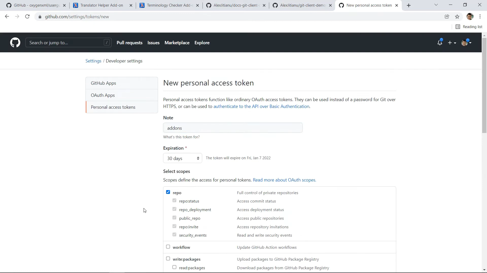
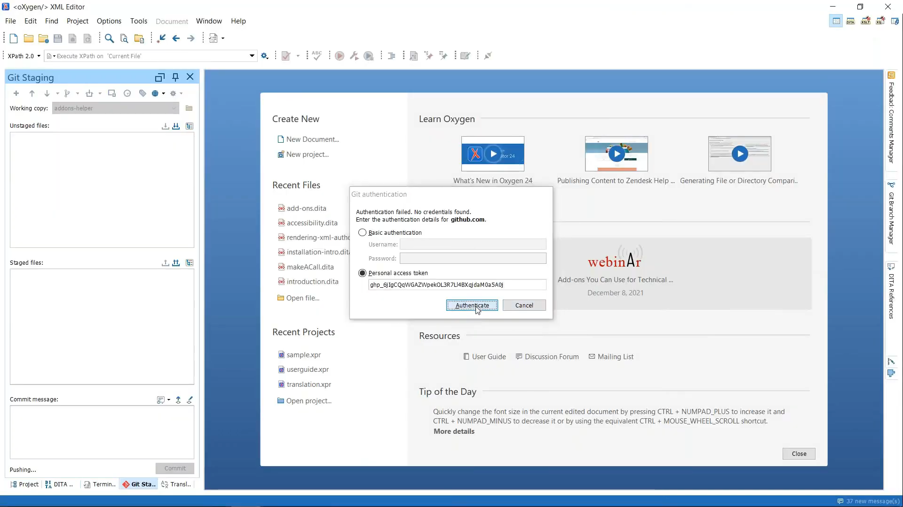
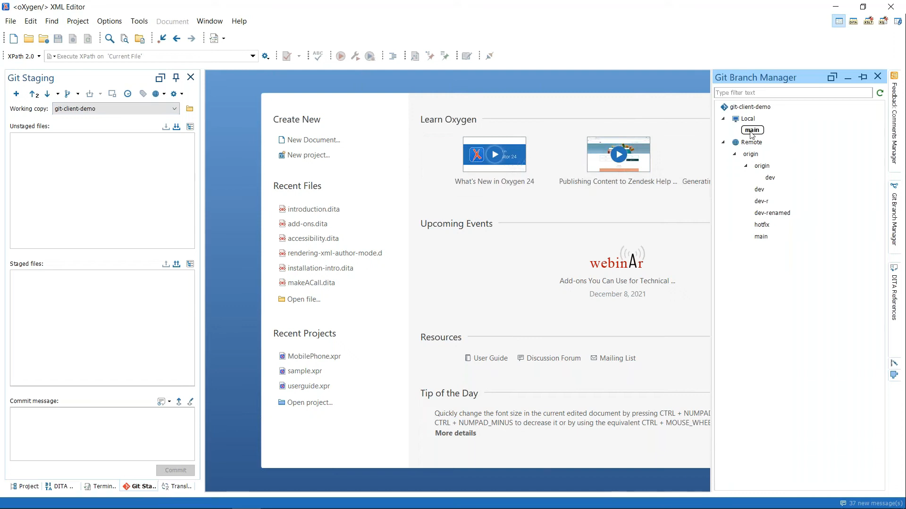
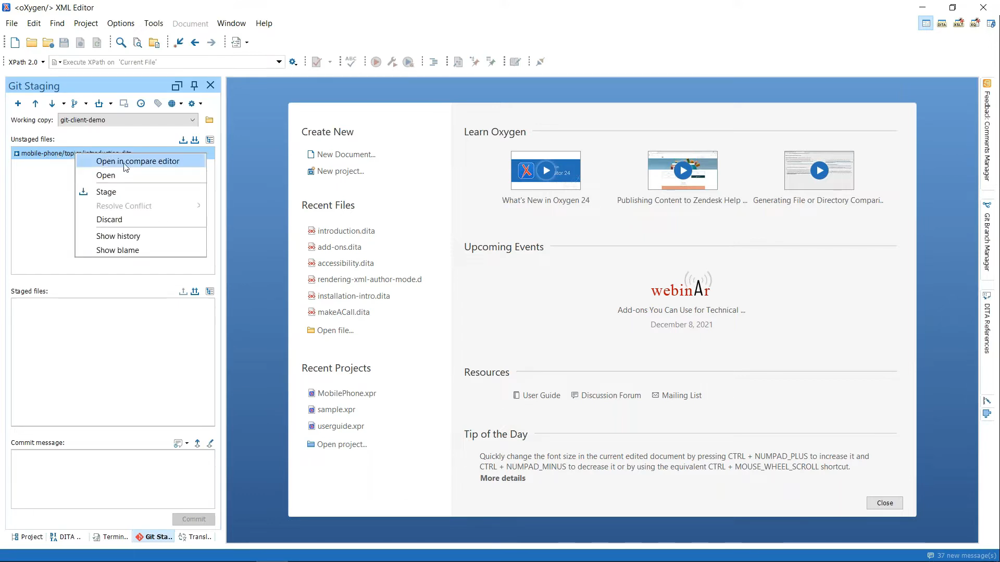
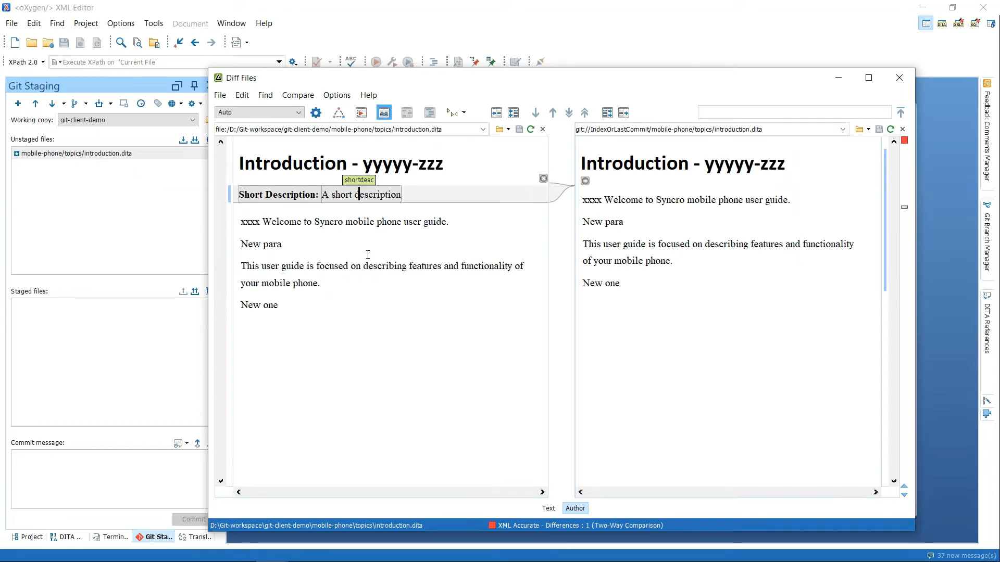
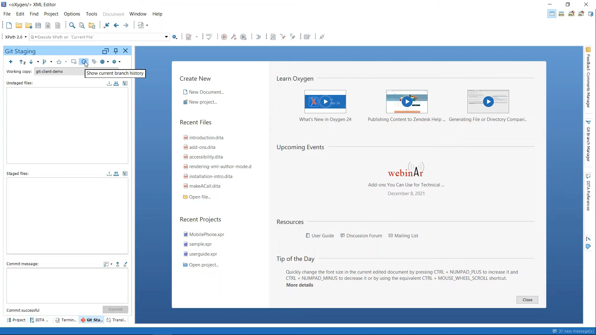
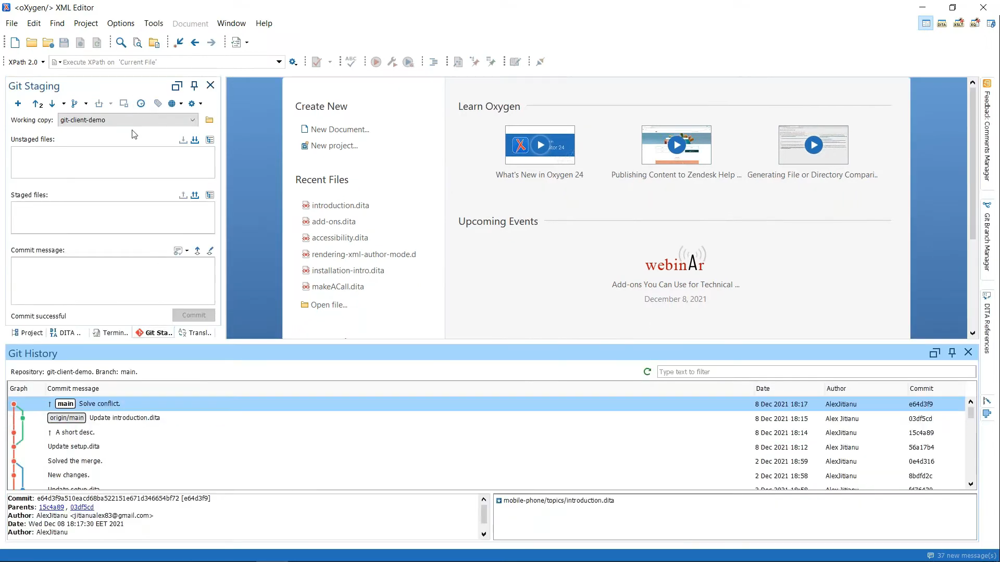
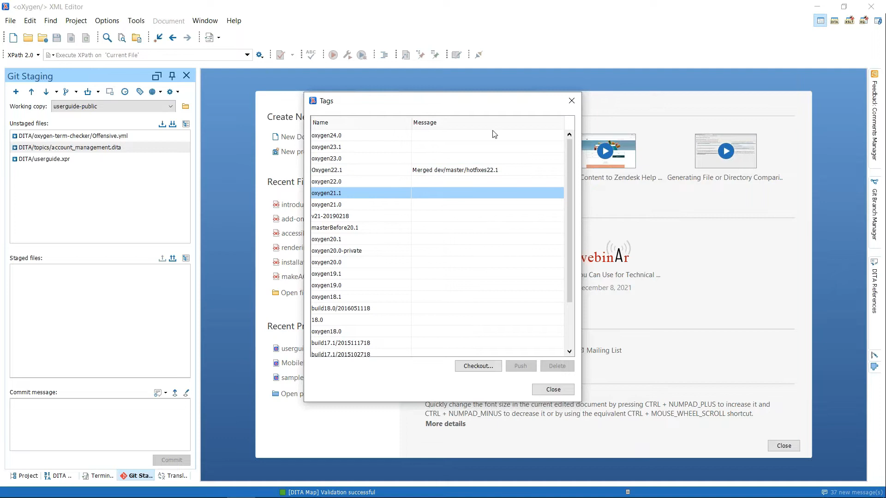

Utilizing Version Control
This topic offers crucial notes and tips for effectively utilizing Version Control in the OxygenXML tooling environment, including initializing the repo, checking out a branch, and creating a tag, among others. It includes headers, images, and links to detailed video tutorials, serving as a quick and handy reference guide for various procedures, without going into step-by-step tasks.
Authentication using a Personal Access Token
When you are connecting a Github Account to your OxygemXML project, you will be asked for an Access Token. Create one in Github.
 https://youtu.be/or80eegpYak?t=532Checking Out a Branch
OxygenXML provides multiple ways to perform almost every action. One notable way of checking out and viewing all the branches (local and remote) is in the Git Branch Manager window.
https://youtu.be/or80eegpYak?t=1234Comparing Changes in the Compare Editor
OxygenXML has a Diff Viewer that can be used to compare files before committing changes. They have integrated this tool into the Git Staging area, allowing you to see potential updates.
  https://youtu.be/or80eegpYak?t=780Show Branch History View
View the git branch history as a graphical representation of the of each user update over time. This provides a easy to understand way to view the local and remote branch updates.
https://youtu.be/or80eegpYak?t=1020Tagging Releases and Versioning
In GitHub, a tag is used as a reference point for a specific point in the repository history. Typically, it’s used to capture a point in history that is used for a marked version release (i.e. v1.0.0). Tags do not change once created. Therefore, you can use a tag to categorize a specific set of commits or a particular state of the code that may represent a version of your project or software. This also aids in version control, allowing easier tracking of different phases of development.
